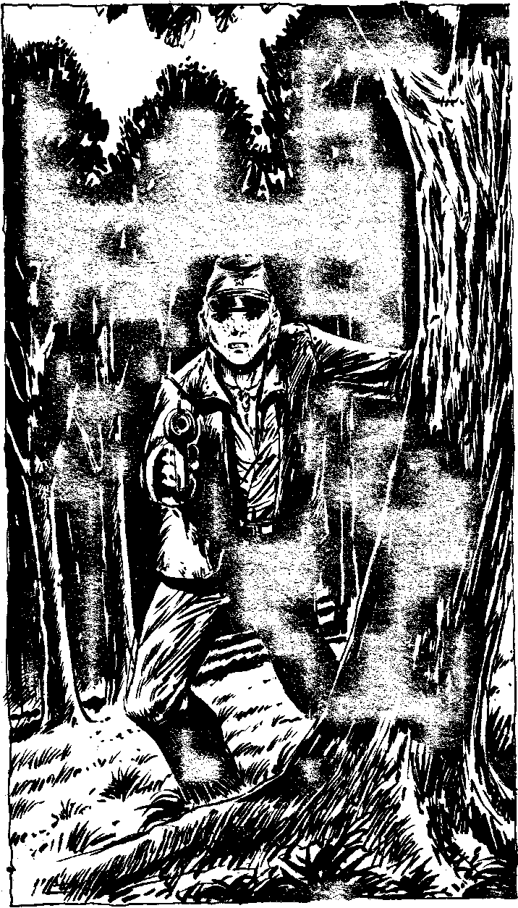

325
Slowly you creep down to the north side of the hill. As you descend, blaster in hand, you can see someone crouching behind a tree, their back to you. Whoever it is has a strong psychic presence and is hiding from someone or something further down at the base of the hill. The crouched figure appears to be a young Confederate soldier, dressed in homespun butternut, with grey trousers. It seems the Confederates were not able to clothe their soldiers properly. Suddenly the figure stiffens and then whirls, a blaster in its hand, pointing at you! Will you:
| Shoot to kill? | Turn to 344 |
| Wait to see what happens next? | Turn to 356 |